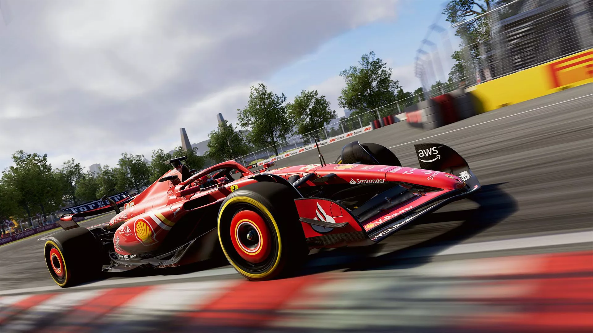
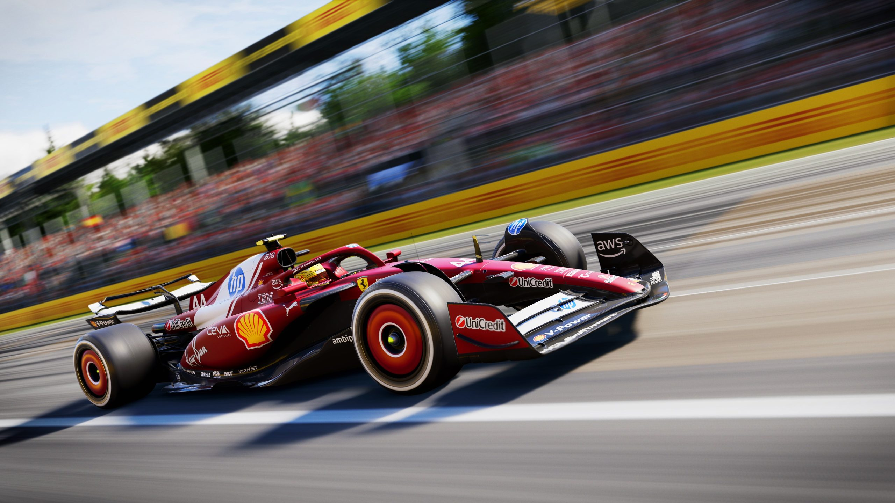
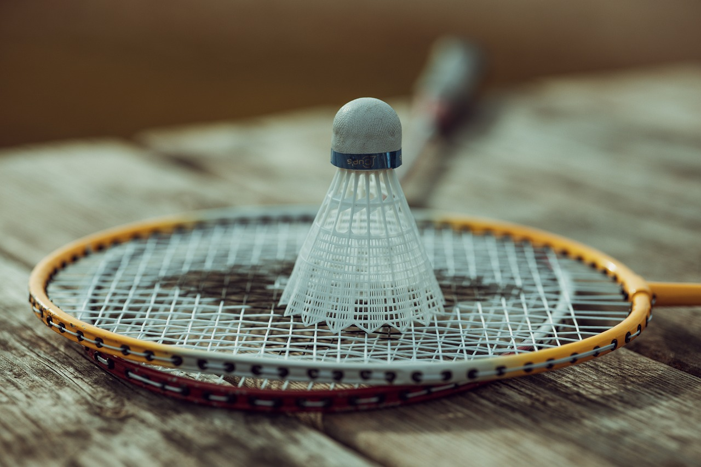
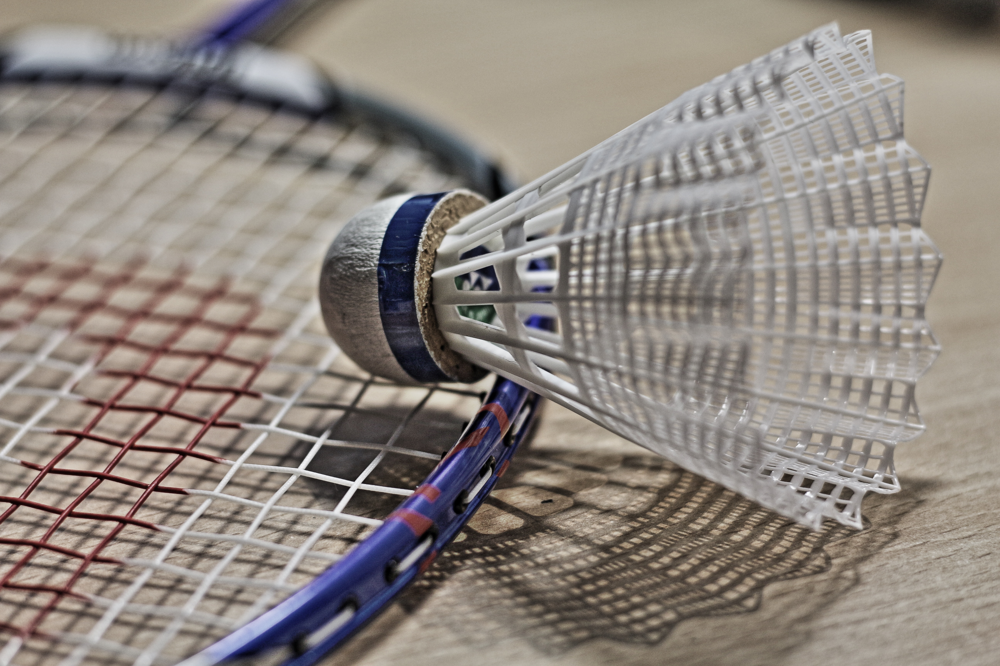
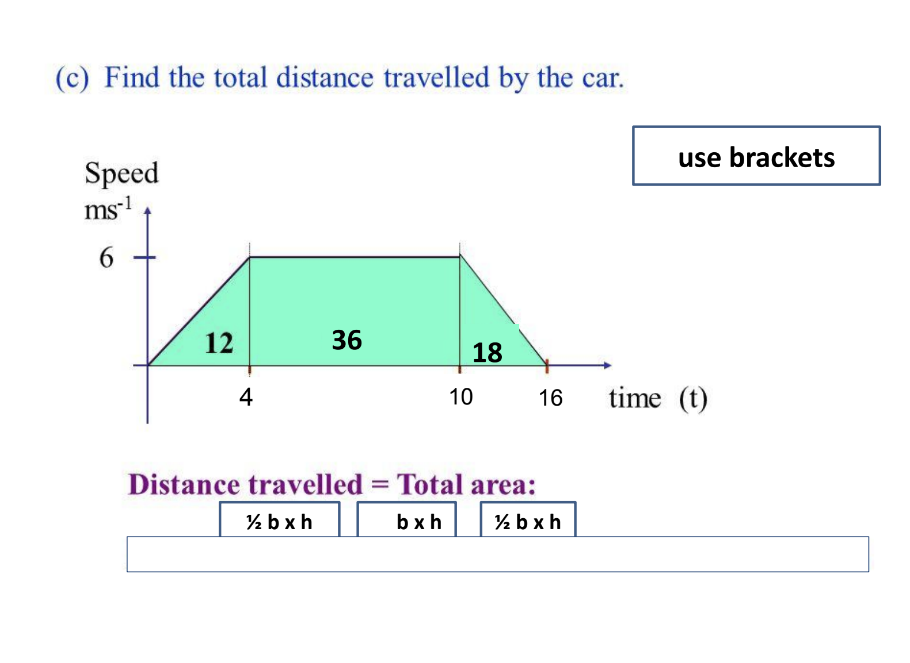
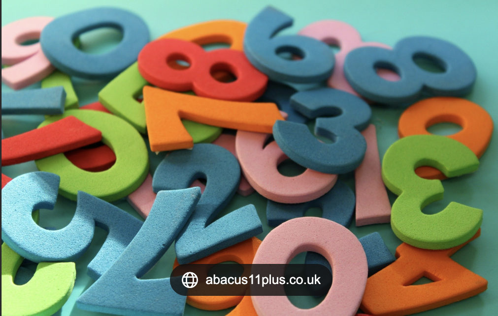

Hobbies
My interests are racing games, badminton, and numeracy. I enjoy playing racing games because they are fast-paced and exciting, and they challenge my reaction time and focus. Badminton is another activity I like because it keeps me active and helps improve my fitness, coordination, and teamwork skills. I also have a strong interest in numeracy, as I enjoy solving maths problems and working with numbers. Numeracy helps me think logically and solve real-life problems, especially in subjects like physics and science. Together, these interests show that I enjoy both physical challenges and mental challenges.



My F1 Hobby
One of my favourite hobbies is playing F1 25. I enjoy the excitement and realism of the game because it makes me feel like I am a real Formula 1 driver competing at the highest level. The fast-paced racing, strategic pit stops, and intense competition keep every race interesting and challenging. In F1 25, I like improving my lap times and learning how to control the car better around different tracks. Each circuit requires focus, precision, and quick decision-making. I also enjoy choosing different teams and drivers, such as Max Verstappen or Lewis Hamilton, and experiencing how their cars handle on the track.
Why I Like Racing
I enjoy racing in general because it combines speed, skill, and strategy. Watching real-life Formula 1 races or imagining myself on the track gives me a rush of excitement. I like how drivers need to stay focused, make quick decisions, and react to unexpected situations, whether it's overtaking another car or handling tricky weather conditions. Racing also inspires me to be patient and disciplined, as success comes from practice, experience, and smart choices — not just going fast. Playing F1 25 and following real-life racing both make me feel connected to the sport I love. It's not only about competition; it's about learning, improving, and enjoying the thrill of the race.



Playing Badminton
One of my hobbies is playing badminton. I enjoy badminton because it is a fast-paced and exciting sport that requires quick reactions, strong focus, and good coordination. When I play, I like challenging myself to improve my skills and become a better player. I practise different shots such as smashes, clears, and drop shots so that I can control the rally and place the shuttlecock in difficult areas for my opponent. Badminton also requires good movement around the court, so I have to stay alert and react quickly to every shot. Each game can be different and unpredictable, which makes the sport even more interesting and enjoyable for me.
Why I Like Badminton
I play badminton because it helps me stay active and improves my overall fitness. Running around the court and reacting quickly to shots helps build my stamina, speed, and coordination. It is also a great way to spend time with friends while having fun and enjoying some friendly competition. Playing badminton teaches me important skills such as concentration, discipline, and perseverance because I need to stay focused and keep trying to improve. Every time I play, I learn something new and work on getting better at the game. Overall, badminton is a sport I enjoy because it is both fun and challenging, and it motivates me to keep improving my abilities.



My Interest In Numeracy
Another area I enjoy is numeracy. Numeracy involves working with numbers, solving problems, and understanding mathematical ideas in everyday life. I like numeracy because it challenges me to think logically and find solutions to different types of problems. Whether it is working with graphs, measurements, or calculations, numeracy helps me develop my problem-solving and reasoning skills. I also find it interesting to see how mathematics can be used to understand patterns and relationships in data.
Why I Like Numeracy
I enjoy numeracy because it helps me improve my thinking and analytical skills. Solving mathematical problems requires concentration, patience, and careful reasoning, which makes it rewarding when I find the correct answer. Numeracy is also important in many subjects and real-life situations, such as analysing data, measuring things accurately, and making informed decisions. I like learning new mathematical concepts and applying them to different situations. Overall, numeracy is something I enjoy because it challenges my mind and helps me develop useful skills for school and everyday life.
Conclusion
Overall, my hobbies and interests include playing F1 25, playing badminton, and developing my
numeracy skills. Each of these activities is different, but they all help me learn and grow in
important ways. Playing F1 25 helps me improve my concentration, reaction time, and strategic thinking
because racing requires careful decision-making and focus. Badminton helps me stay physically active
while improving my coordination, speed, and fitness. Numeracy helps me strengthen my logical thinking
and problem-solving skills, which are useful in many areas of learning and everyday life.
These hobbies also help me balance different parts of my life. Racing games give me a fun way to relax and
enjoy competition, badminton keeps me active and engaged in sport, and numeracy challenges my mind and helps
me think more critically. By spending time on these interests, I am able to develop both my physical and mental
skills. Overall, these hobbies are important to me because they help me improve, stay motivated, and enjoy
learning new things.